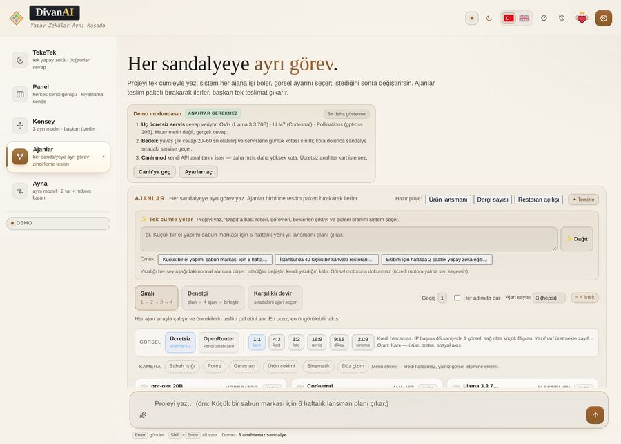

Ajan metninden görsel: motoru sen seçersin
Ajanlar modunda bir kutuyu işaretlersen o ajan metnini bitirdikten sonra görsel çizilir. Görseli ajanın kendisi değil, yukarıda seçtiğin görsel motoru üretir — bu ayrımı karıştırmamak gerekir.

İki motor var
| Motor | Anahtar | Not |
|---|---|---|
| Ücretsiz (anahtarsız) | Gerekmez | Hızlı; sıra bekleme ve kalite sınırı olabilir |
| OpenRouter | Kendi anahtarın | Kredi harcar; model seçenekleri daha geniş |
Motor seçimi metin modelinden bağımsızdır: metni hangi sandalye yazıyorsa yazsın, görseli bu satırdaki motor çizer.
Altı oran
1:1 kare · 4:3 kart · 3:2 foto · 16:9 geniş · 9:16 dikey · 21:9 sinema. Seçtiğin oran üretimin gerçek boyutunu belirler; sonradan kırpmak zorunda kalmazsın. Ürün görseli için kare, sunum kapağı için geniş, telefon hikâyesi için dikey doğru seçim.
Kamera etiketleri kredi harcamaz
Sabah ışığı · Portre · Geniş açı · Ürün çekimi · Sinematik · Düz çizim. Bunlar metin etiketidir: yalnız istemin sonuna eklenir, ayrı istek göndermez, kredi harcamaz.
Kaç görsel çizilir?
Açılışta uygulama kaç görsel çizileceğini sorar; istemezsen hiç çizdirmezsin. Ajan kartındaki kutu yalnız “bu ajanın metninden görsel çizilsin” demektir, sayıyı belirlemez.
Sık sorulan sorular
Görsel üretimi ücretsiz mi?
Ücretsiz motorda anahtar gerekmez. OpenRouter motorunda kredi harcar; tutarı servisin fiyat listesi belirler.
Görseli ajan mı çiziyor?
Hayır. Ajan metni yazar, görseli yukarıda seçtiğin motor üretir.
Oranı sonradan değiştirebilir miyim?
Her tur için seçilir; değiştirip yeniden çizdirebilirsin.
Yazı/harf üretebiliyor mu?
Görsel modellerinde yazı üretmek zayıftır; logo ya da afiş metni için güvenilir sonuç beklemeyin.